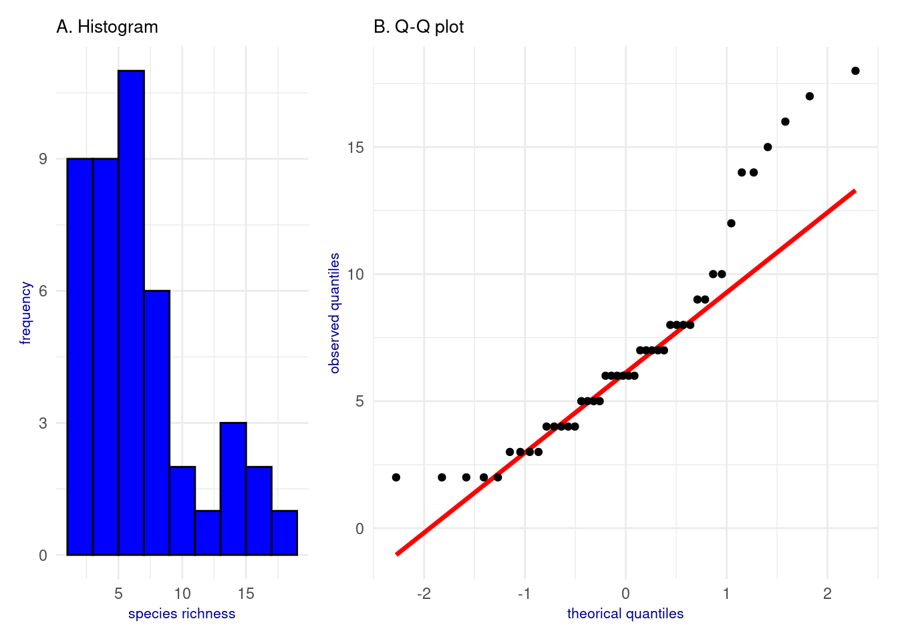
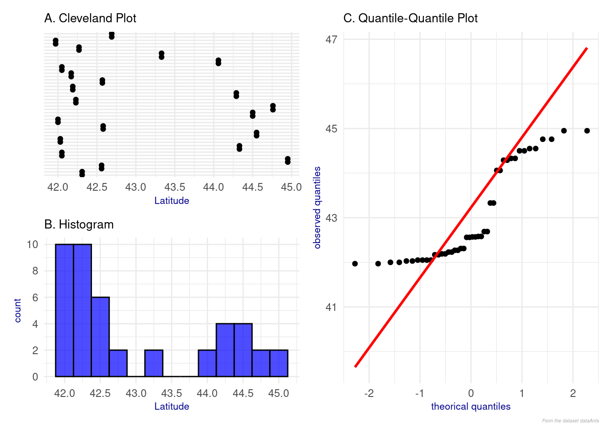
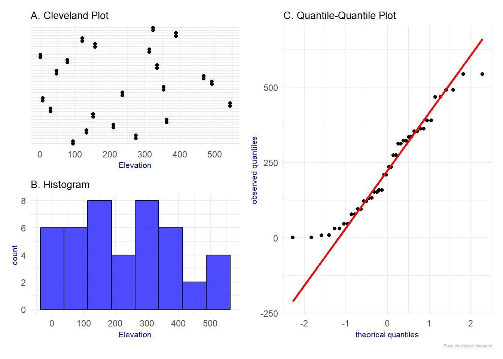
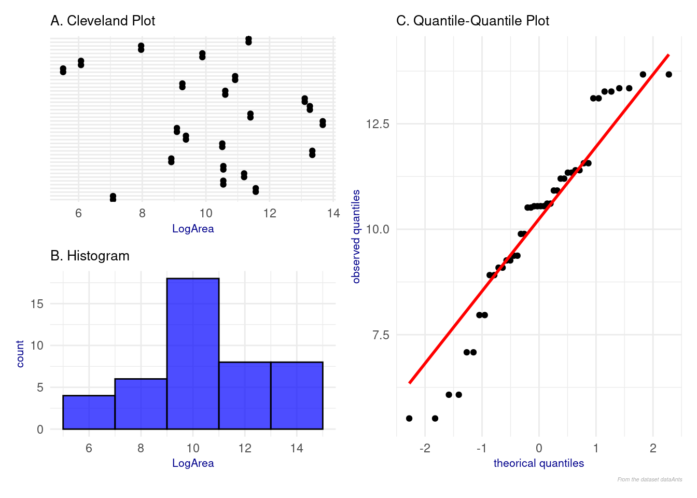
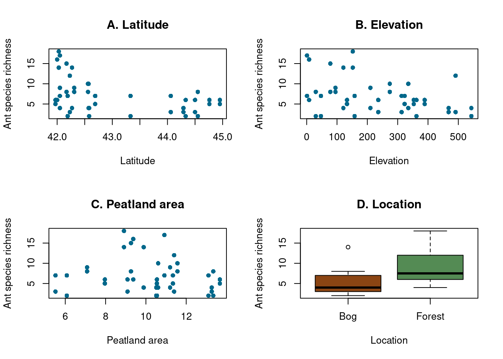
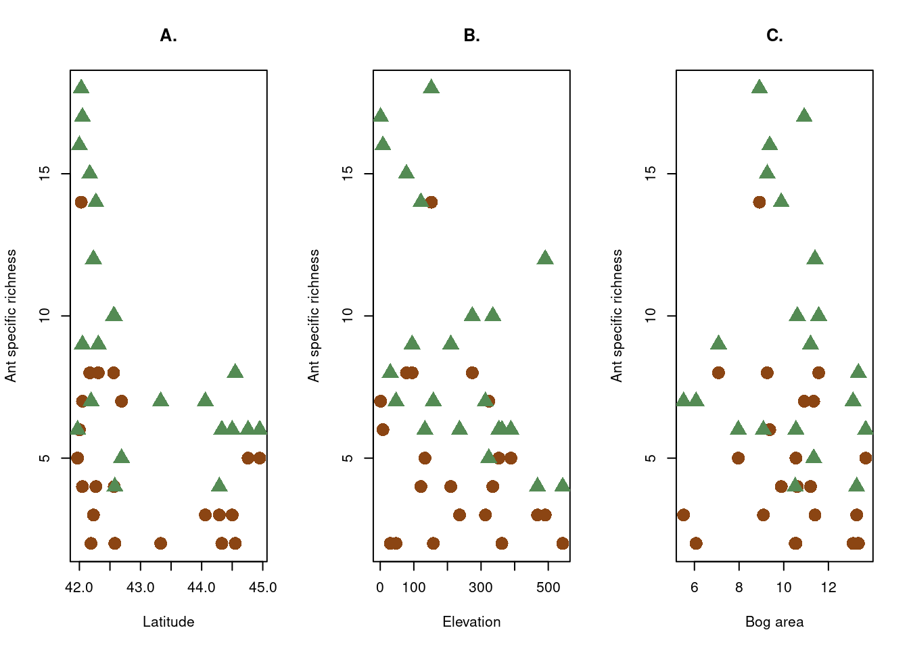
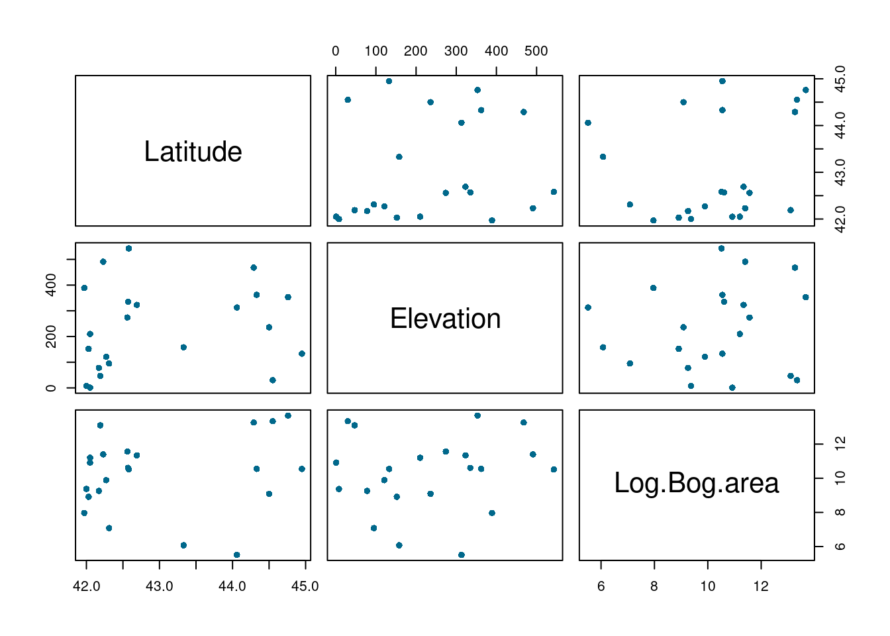
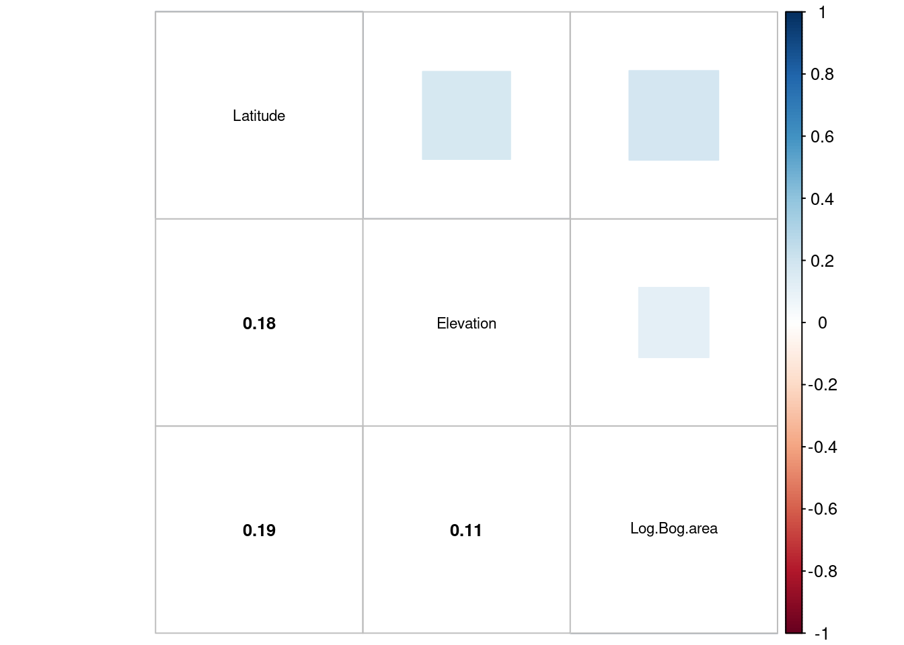
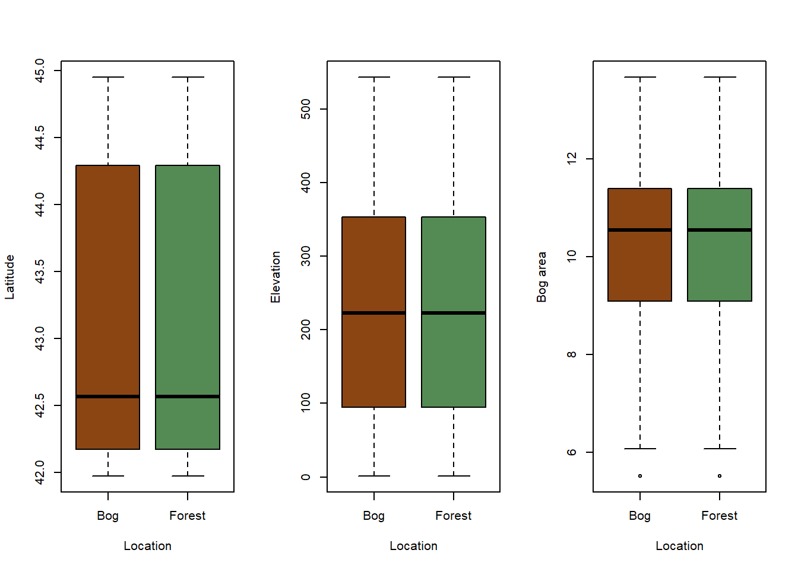
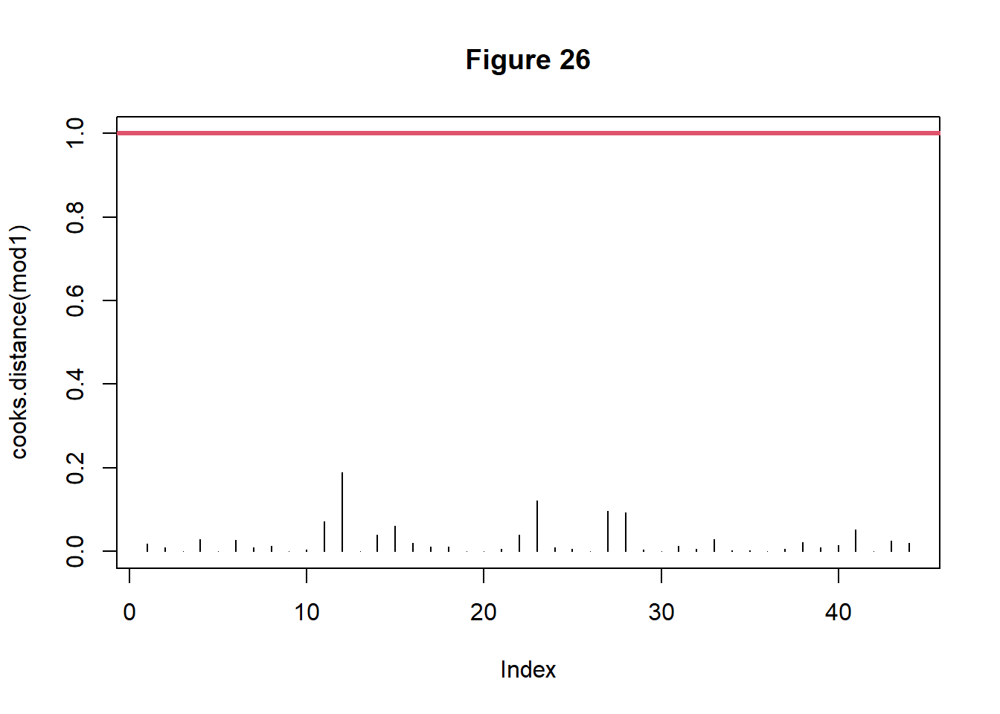

Our data come from the article “Biogeography at a Regional Scale: Determinants of Ant Species Density in New England Bogs and Forests” by (Gotelli_2002?).
2. Biological context
Gotelli and Ellison are two ecologists, the first one specializing in questions of organization of animal and plant communities, the second one in the disintegration and reassembly of ecosystems following natural and anthropogenic disturbances. Here, they focused on the influence of the latitudinal gradient on the species richness of ants in the state of New England in the northeastern United States. Their study was carried out on 22 sites where, for each, 25 traps were placed in an ombrotrophic peat bog and 25 in the surrounding forest. The species of ants contained in the traps are subsequently identified in the laboratory and, for a given site and habitat, they calculated the species richness (total number of species present).
3. Datas and variables
The variables used are :
- Site : the name of the sampled site
- Latitude : site latitude (quantitative)
- Altitude : site altitude (quantitative)
- Area : the area of the peat bog of the site (quantitative)
- Location : the location of the traps (“Bog” or “Forest”) (qualitative)
- Nsp : the specific richness of ants, corresponding to the response variable
4. Research question
Gotelli and Ellison address 3 questions in this study, but we focus here on two:
1) Is species density correlated with latitude over such a narrow latitudinal range?
2) Does the latitudinal gradient persist after statistically controlling for site differences in vegetation composition?
In other words: what are the quantitative (latitude, altitude, area) and qualitative (location) variables that determine ant species richness in New England peatlands?
5. Importing the dataset
From then on, we can import the dataset located in file “BogAnts.txt”
Code
# Session Configuration :rm(list=ls()) # Cleaning the work environment# ImportationdataAnts <-read.table("BogAnts.txt", dec=".", header =TRUE)# Transforming location into a factordataAnts$Location<-as.factor(dataAnts$Location)# Checking the type of variablesstr(dataAnts)
Qualitative or quantitative variables are well considered as such.
6. Which model and why?
To model the relationship between a quantitative response variable \(Y\) and explanatory variables \(X_{1}\),\(X_{2}\)…\(X_{p}\), quantitative and/or qualitative we use general linear models, or glm, (linear regression, ANCOVA, ANOVA). To be able to use these glm, three conditions of application are necessary: homogeneity of variances, residual independence and residual normality. However, the \(Y\) responses analyzed in ecology can sometimes be discrete and deviate from the hypothesis of normality.
For discrete response variables (counts, binary data), the variance of \(Y\) generally varies with the mean of \(Y\). This relationship then seems to indicate that the variance cannot be homogeneous in a data set, due to its dependence on the mean. However, general linear models have a constant variance as their application hypothesis (i.e. a homogeneity of the variance). Furthermore, when applying a general linear model to count data, the predicted values obtained may be negative (which is impossible given the nature of \(Y\)) and the residuals may not be normally distributed. Therefore, using a general linear model (glm) on discrete responses very generally generates deviations from the application conditions. In conclusion, it becomes necessary to use a method more suited to the analysis of discrete response variables such as generalized linear models (glim).
Here are the steps to follow to establish a generalized linear model:
1. Formulate the hypothesis of the distribution law of the response variable \(Y_{i}\)
2. Explore the data (outliers, distribution of values,) with (Zuur_2010?) protocol
3. Analyze the interactions between the variables Y and Xs (analysis of the relationships between X and Y, between Xs, and search for collinearity between Xs)
4. Proceed with statistical analyses (construction of the model, analysis of the coefficients, explanatory power of the model)
5. Conclude on the results
A generalized linear model is written as follows (equation 1): \[g(\mu_{y})= \alpha+ \beta_{1}.X_{i1}+ \beta_{2}.X_{i2}+\beta_{3}.X_{i3}+...\beta_{p}.X_{ip} = \eta \tag{1}\] The linear predictor, \(\eta\), is derived from the linear model as the sum of the \(p\) terms associated with each of the \(\beta_{p}\) parameters. Its value is obtained by transforming the value of \(Y\) by the link function, and the predicted value of \(Y\) is obtained by applying to \(\eta\) the inverse function of the link function.
To illustrate this point, we are interested in counts. A count is a discrete and positive random variable. It is possible that the distribution of its values follows a Poisson distribution, a Negative Binomial distribution or even a Normal distribution when the values are very large.
Our example illustrates a distribution following the Poisson law.
The Poisson law is useful for describing rare and independent discrete events. Thus, a variable \(Y\) that follows a Poisson law with parameter \(\lambda\) is written as follows (equation 2): \[Pr(Y=y)=\frac{e^{-\lambda}.\ lambda^y}{y!} \tag{2}\] where \(y\) represents the observed number of occurrences (i.e., \(y\)=0, 1, 2…} and \(\lambda\) the mean and variance of the Poisson law (i.e. in the Poisson law: E(\(y\))= Var(\(y\))=\(\lambda\)).
In a Poisson-type glim, the link function is the log function. Thus, the model is written (equation 3): \[log(\mu_{y})= \alpha+ \beta_{1}.X{i1}+ \beta_{2}.X{i2}+\beta_{3}.X{i3}+...\beta_{p}.X{ip} = \eta \tag{3}\] 150 / 5 000 The predicted values of \(Y\) are obtained by applying to \(\eta\) the inverse function of the link function, here the log function (equation 4): \[\mu_{y}= e^{\alpha+ \beta_{1}.X{i1}+ \beta_{2}.X{i2}+\beta_{3}.X{i3}+...\beta_{p}.X{ip}} = e^{\eta} \tag{4}\]
Generalized linear models of the Poisson type have an error structure that follows a Poisson distribution. This structure allows, among other things, to precisely define the relationship between the mean and the variance. This relationship is exploited by the maximum likelihood method to estimate the coefficients and standard errors of the parameters of the GLM model.
7. Environment Configuration and Packages
To analyze our data we set up the session by cleaning the workspace. We will also need to load the following packages : knitr, ggplot2, tinytext, corrplot, plot3D, DHARMa, rcompanion, lattice, patchwork, MASS et rcompanion
8. Checking for missing data
Code
# Checking for missing datacolSums(is.na(dataAnts))
Site Latitude Elevation Area Location Nsp
0 0 0 0 0 0
Code
summary(dataAnts)
Site Latitude Elevation Area
Length:44 Min. :41.97 Min. : 1.0 Min. : 248
Class :character 1st Qu.:42.17 1st Qu.: 95.0 1st Qu.: 8852
Mode :character Median :42.56 Median :223.0 Median : 38052
Mean :43.02 Mean :232.7 Mean :144528
3rd Qu.:44.29 3rd Qu.:353.0 3rd Qu.: 89208
Max. :44.95 Max. :543.0 Max. :864970
Location Nsp
Bog :22 Min. : 2.000
Forest:22 1st Qu.: 4.000
Median : 6.000
Mean : 7.023
3rd Qu.: 8.250
Max. :18.000
There are no missing values.
9. Analysis process
From this, we will first examine the dataset (outliers, potential relationships between Y and Xs, …) in order to have a first impression. Subsequently, we will carry out our statistical analysis by building and refining our model. Finally, we will analyze its coefficients and its explanatory power in order to validate it or not.
DATA EXPLORATION
1. Data overview
a. Outliers in Y and distribution of Y values
The first step in exploring the dataset is to check for potential outliers in the response variable \(Y\) and to examine the distribution of its values.
Outliers: In ecological datasets, it is common to encounter individuals with extreme values for the response variable. These individuals, due to their unusual values, may disproportionately impact model construction. However, these extreme values may arise from either the natural variability of ecological phenomena or from errors (e.g., measurement or handling errors). Identifying these individuals prior to statistical analysis helps prevent errors and, if necessary, justifies the exclusion of certain outliers to improve the model’s robustness.
Outliers can be identified using a Boxplot or a Cleveland plot of the values of \(Y\).
Code
# Boxplot bp <-ggplot(data = dataAnts, aes(y = Nsp))+geom_boxplot()+labs(subtitle ="A. Boxplot",y ="species richness")+theme(panel.background =element_rect(fill="white"),panel.grid.major =element_blank(), panel.grid.minor =element_blank(),axis.text.x =element_blank(), axis.ticks.x =element_blank(),axis.title.x =element_text(size =8, color ="darkblue"),axis.title.y =element_text(size =8, color ="darkblue"),plot.title =element_text(size =14, face ="bold", color ="black"), plot.subtitle =element_text(size =10, color ="black"), plot.caption =element_text(size =4, face ="italic", color ="darkgrey") )# Cleveland plot cp <-ggplot(data = dataAnts, aes(x = Nsp, y =1:nrow(dataAnts)))+geom_jitter(width =0.1, size =3, color ="black")+labs(subtitle ="B. Cleveland plot",x ="species richness")+theme_minimal()+theme(panel.grid.major.x =element_blank(),panel.grid.minor.x =element_blank(),axis.text.y =element_blank(),axis.ticks.y =element_blank(),axis.title.y =element_blank(),axis.title.x =element_text(size =8, color ="darkblue"),plot.title =element_text(size =14, face ="bold", color ="black"), plot.subtitle =element_text(size =10, color ="black"), plot.caption =element_text(size =4, face ="italic", color ="darkgrey") )## Display(bp + cp) +plot_layout(widths =c(1, 2))
Figure 1: Analyse of Y outliers
According to Figure 1, \(Y\) does not exhibit any extreme or outlier values.
Distribution of values: Analyzing the distribution of the values of \(Y\) allows us to preliminarily identify the probability distribution that best explains the ongoing ecological processes. This is particularly interesting if the data suggest a non-linear or asymmetric relationship.
The distribution of \(Y\) values can be visualized using a histogram or a Normal Q-Q plot.
Code
# Histogramhg <-ggplot(data = dataAnts, aes(x = Nsp))+geom_histogram(binwidth =2, fill ="blue", color ="black")+theme_minimal()+labs(subtitle ="A. Histogram",x ="species richness",y ="frequency")+theme(axis.title.x =element_text(size =8, color ="darkblue"),axis.title.y =element_text(size =8, color ="darkblue"),plot.title =element_text(size =14, face ="bold", color ="black"), plot.subtitle =element_text(size =10, color ="black"), plot.caption =element_text(size =4, face ="italic", color ="darkgrey") )qqp <-ggplot(data = dataAnts, aes(sample = Nsp))+geom_qq_line(color ="red", size =1.2)+geom_qq()+theme_minimal()+labs(subtitle ="B. Q-Q plot",x ="theorical quantiles",y ="observed quantiles")+theme(axis.title.x =element_text(size =8, color ="darkblue"),axis.title.y =element_text(size =8, color ="darkblue"),plot.title =element_text(size =14, face ="bold", color ="black"), plot.subtitle =element_text(size =10, color ="black"), plot.caption =element_text(size =4, face ="italic", color ="darkgrey") )# Display(hg + qqp) +plot_layout(widths =c(1, 2))

Figure 2: Analyse of Y distribution
The distribution of \(Y\) (negative exponential, Figure 2 A) and the nature of the dataset (count data without aggregation) suggest that \(Y\) follows a Poisson distribution. This hypothesis is supported by the deviation from normality of \(Y\) observed values shown in Figure 2 B.
Conclusion:
After analyzing the outliers and the distribution of the response variable $Y$, it appears appropriate to use \(Y\) as is while applying a Poisson distribution.
b. X quantitative: presence of outliers and distribution of X values
The dataset has three quantitative explanatory variables: Latitude, Elevation, and Area. Just like for the response variable \(Y\), it is necessary to examine the presence of outliers as well as the distribution of each of these explanatory variables.
Latitude:
Code
p1 <-ggplot(dataAnts) +aes(x=Latitude, y=factor(1:nrow(dataAnts), levels =1:nrow(dataAnts))) +# display in the order of appearancegeom_jitter(width=0, height=0.1) +scale_x_continuous(breaks =seq(41.5, 45, by =0.5)) +# values of the X axislabs(subtitle ="A. Cleveland Plot",x="Latitude") +# Titrestheme_minimal() +theme(axis.text.y =element_blank(), # remove the labels from the Y axisaxis.ticks.y =element_blank(), # remove the ticks from the Y axisaxis.title.y =element_blank(), # remove the title from the X axisaxis.title.x =element_text(size =8, color ="darkblue"),plot.title =element_text(size =14, face ="bold", color ="black"),plot.subtitle =element_text(size =10, color ="black") ) p2 <-ggplot(dataAnts) +aes(x = Latitude) +geom_histogram(binwidth =0.25, fill ="blue", color ="black", alpha =0.7) +# histogramscale_x_continuous(breaks =seq(41.5, 45, by =0.5)) +# values of the X axisscale_y_continuous(breaks =seq(0, 10, by =2)) +# values of the Y axis labs(subtitle ="B. Histogram",x ="Latitude") +# titletheme_minimal() +# theme of the graph: minimaltheme(axis.title.x =element_text(size =8, color ="darkblue"), axis.title.y =element_text(size =8, color ="darkblue"),plot.subtitle =element_text(size =10, color ="black") ) p3 <-ggplot(dataAnts, aes(sample = Latitude)) +labs(subtitle ="C. Quantile-Quantile Plot",caption ="From the dataset dataAnts",x ="theorical quantiles",y ="observed quantiles") +stat_qq() +# observed quantilesstat_qq_line(col ="red", size =1) +# theorical quantilestheme_minimal() +theme(axis.title.x =element_text(size =8, color ="darkblue"),axis.title.y =element_text(size =8, color ="darkblue"),plot.title =element_text(size =14, face ="bold", color ="black"), plot.subtitle =element_text(size =10, color ="black"), plot.caption =element_text(size =4, face ="italic", color ="darkgrey") ) (p1 / p2) | p3 +plot_layout(guides ="collect")

Figure 3: Analyse of explanatory variable Latitude
There are no outliers observed in the Cleveland plot (Figure 3 A) or in the histogram (Figure 3 B).
The Quantile plot (Figure 3 C) shows a deviation from normality. This suggests that it is more appropriate to use a generalized linear model (glm) rather than a classical linear model (lm).
Elevation:

Figure 4: Analyse of explanatory variable Elevation
No outliers are observed in the Cleveland plot (Figure 4 A) or in the histogram (Figure 4 B).
The Quantile plot (Figure 4 C) shows a deviation from normality. This suggests that it is advisable to use a generalized linear model rather than a classical linear model.
Area:
Figure 5: Analyse of explanatory variable Area
We observe outliers in the Cleveland plot (Figure 5 A) and in the histogram (Figure 5 B) due to the presence of very extensive peatlands. We can apply a transformation to this variable and consider a logarithmic transformation.

Figure 6: Analyse of explanatory variable log(Area)
No outliers are observed in the Cleveland plot (Figure 6 A) or in the histogram (Figure 6 B).
Conclusion:
The analysis of outliers and the distribution of the variables suggest that, after modification, the three quantitative variables (covariates) Latitude, Elevation, and LogArea can be used in the construction of the model.
c. X qualitative : number of modalities and number of individuals per modalities
When the dataset includes qualitative variables (factors), it is essential to analyze the balance of modalities: if there are more individuals in one modality compared to another, their weight in the model may lead to a biased final interpretation.
Code
summary(dataAnts$Location)
Bog Forest
22 22
Here, the data are well distributed between the two modalities (Bog = peatlands and Forest = forests).
Conclusion:
The analysis of outliers and the distribution of the qualitative variable suggest that it can be used in the construction of the model.
2. Analysis of interactions between variables Y and Xs
a. Analyze the potential relationship between Y and Xs
In order to test the possible relationship between the response variable \(Y\) and the explanatory variables \(Xs\), it will be essential to carry out statistical modelling, as this is the only way to test the significance of the relationships. However, we can start by performing graphical analyses to better visualize the data and get an idea
Code
par(mfrow=c(2,2))# For the latitude variableplot(dataAnts$Nsp~dataAnts$Latitude,pch=16,col='deepskyblue4',xlab='Latitude',ylab='Ant species richness', main ="A. Latitude")# For the altitude variableplot(dataAnts$Nsp~dataAnts$Elevation,pch=16,col='deepskyblue4',xlab='Elevation',ylab='Ant species richness', main ="B. Elevation")# For the variable peatland areaplot(dataAnts$Nsp~dataAnts$LogArea,pch=16,col='deepskyblue4',xlab='Peatland area',ylab='Ant species richness', main ="C. Peatland area")# For the location variableboxplot(dataAnts$Nsp~dataAnts$Location, varwidth =TRUE, ylab ="Ant species richness", xlab ="Location", col=c('saddlebrown','palegreen4'), main ="D. Location")

Figure 7: Analyse of relation between Y and explanatory variable
Relationship between ant species richness and latitude (Figure 7 A): We can see that the higher the latitude, the lower the species richness. We can say that the further north we are, the fewer ant species there are.
Relationship between ant species richness and altitude (Figure 7 B): In this graph, we can again see that the higher the altitude, the lower the species richness.
Relationship between ant species richness and bog area (Figure 7 C): Here, there appears to be no relationship between ant species richness and bog area.
Relationship between ant species richness and location (Figure 7 D.): Here, there appears to be a relationship between location and ant species richness, with higher species richness in forests than in bogs.
Conclusion:
It seems that the further north and the higher the relief, the lower the ant species richness. What’s more, if we’re in a forest, the species richness will be greater than in bogs.
b. Analysis of Potential Interactions Among the X Variables
We aim to study interactions between the factor and the three covariates. Thus, we exclude any interaction among the quantitative explanatory variables. We use a graphical approach to estimate the potential interactive effect among these different variables.
Code
par(mfrow=c(1,3))# Interactions between Latitude & Locationplot(dataAnts$Nsp~dataAnts$Latitude,type='n',ylab ="Ant specific richness",xlab="Latitude", main="A.")points(dataAnts$Nsp[dataAnts$Location=="Bog"]~dataAnts$Latitude[dataAnts$Location=="Bog"],pch=16,cex=2,col='saddlebrown')points(dataAnts$Nsp[dataAnts$Location=="Forest"]~dataAnts$Latitude[dataAnts$Location=="Forest"],pch=17,cex=2,col='palegreen4')# Interactions between Altitude & Localisationplot(dataAnts$Nsp~dataAnts$Elevation,type='n',ylab ="Ant specific richness",xlab="Elevation", main="B.")points(dataAnts$Nsp[dataAnts$Location=="Bog"]~dataAnts$Elevation[dataAnts$Location=="Bog"],pch=16,cex=2,col='saddlebrown')points(dataAnts$Nsp[dataAnts$Location=="Forest"]~dataAnts$Elevation[dataAnts$Location=="Forest"],pch=17,cex=2,col='palegreen4')# Interactions between Superficie de la tourbière & Localisationplot(dataAnts$Nsp~dataAnts$LogArea,type='n',ylab ="Ant specific richness",xlab="Bog area", main="C.")points(dataAnts$Nsp[dataAnts$Location=="Bog"]~dataAnts$LogArea[dataAnts$Location=="Bog"],pch=16,cex=2,col='saddlebrown')points(dataAnts$Nsp[dataAnts$Location=="Forest"]~dataAnts$LogArea[dataAnts$Location=="Forest"],pch=17,cex=2,col='palegreen4')

Figure 8: Analyse of relation between explanatory variable
Generally if we look at Figure 8, we can assume an interaction between covariates if the slopes formed by the two point clouds are different. Here, the clouds do not clearly reveal any similarity or difference in trend for each graph. It is therefore difficult to draw conclusions about these interactions.
c. Checking for Potential Collinearity Among the X Variables
We aim to avoid collinearity among the explanatory variables in our modeling to prevent multiple variables from providing the same information. To do this, we must examine the statistical relationships that may exist among the variables by calculating the correlation between quantitative \(X\) variables, and analyzing the influence of the qualitative \(X\) on the quantitative \(X\) variables using plot graphics.
Code
# Checking for collinearity between independent continuous variables# Creating a scatterplot for each pair of covariatesnewdata<-cbind(dataAnts$Latitude,dataAnts$Elevation,dataAnts$LogArea)colnames(newdata)<-c('Latitude','Elevation','Log Bog area')newdata<-data.frame(newdata)plot(newdata,pch=16,col='deepskyblue4')

Figure 9: Analyse of collinearity between independant continuous variables, scatterplot for each pair of covariates
Code
# Calculating correlation for each pair of covariatesM<-cor(newdata)corrplot.mixed(M,upper="square",lower.col="black", tl.col="black",cl.cex =0.8,tl.cex =0.7,number.cex =0.8)

Figure 10: Analyse of collinearity between independant continuous variables, correlation for each pair of covariates
Code
par(mfrow=c(1,3))# Checking for collinearity between categories and continuous variables# Latitude and Locationboxplot(dataAnts$Latitude~dataAnts$Location, varwidth =TRUE, ylab ="Latitude", xlab ="Location",col=c('saddlebrown','palegreen4'))# Altitude and Locationboxplot(dataAnts$Elevation~dataAnts$Location, varwidth =TRUE, ylab ="Elevation", xlab ="Location",col=c('saddlebrown','palegreen4'))# Bog Area and Locationboxplot(dataAnts$LogArea~dataAnts$Location, varwidth =TRUE, ylab ="Bog area", xlab ="Location",col=c('saddlebrown','palegreen4'))

Figure 11: Analyse of collinearity between categories and continuous variables
In the first graph (Figure 9), we can see that the point clouds do not appear to show any trend toward collinearity. This impression is confirmed by the calculated values in the following figure (Figure 10), where the values are well below 0.7, which is commonly used as a threshold for collinearity (above this, variables are considered correlated). The almost complete overlap of the boxplots (Figure 11) further supports the non-collinearity of these factors.
Conclusion:
There does not appear to be any collinearity among the variables, so we can retain them all.
STATISTICAL ANALYSIS
1. Model construction
We aim to produce the best model for predicting the number of species. The response variable is a count (a discrete quantitative variable) with small numbers (<30), so the appropriate distribution is the Poisson distribution. We’re going to model it using a generalized linear Poisson model.
To arrive at the “candidate” model to be tested, we’ll start with the “complete” model, i.e. with all the explanatory variables and their interactions, and use Backward selection to select the variables and interactions to be retained.
Let’s start with the complete model:
Code
# model formulation with the fonction glm() and family=poisson(link="log")mod1<-glm(Nsp~ Location+ Latitude+ Elevation+ LogArea+ Location:Latitude+ Location:Elevation+ Location:LogArea ,data=dataAnts ,family=poisson(link="log"))
Based on this complete model, we will eliminate the insignificant interactions step by step.
All three interactions are insignificant. We remove the ‘Location:Latitude’ interaction as it is the ‘least significant’. We can also see that the drop1() function informs us that it’s by removing this interaction that we get the best AIC.
Call:
glm(formula = Nsp ~ Location + Latitude + Elevation, family = poisson(link = "log"),
data = dataAnts)
Coefficients:
Estimate Std. Error z value Pr(>|z|)
(Intercept) 11.9368121 2.6214970 4.553 5.28e-06 ***
LocationForest 0.6354389 0.1195664 5.315 1.07e-07 ***
Latitude -0.2357930 0.0616638 -3.824 0.000131 ***
Elevation -0.0011411 0.0003749 -3.044 0.002337 **
---
Signif. codes: 0 '***' 0.001 '**' 0.01 '*' 0.05 '.' 0.1 ' ' 1
(Dispersion parameter for poisson family taken to be 1)
Null deviance: 102.76 on 43 degrees of freedom
Residual deviance: 40.69 on 40 degrees of freedom
AIC: 209.04
Number of Fisher Scoring iterations: 4
Note: it is recommended to use AIC with more than 40 individuals per parameter, otherwise there is AICc ((YannickOutreman?)).
Conclusion:
Both methods arrive at the same candidate model: Nsp~Latitude+Elevation+LogArea.
2. Coefficients analysis
The next step is to analyze the coefficients. We’ll be looking at the precise effect of the selected explanatory variables (Latitude, Elevation, LogArea) on ant species richness.
Code
# Coefficients summary(mod1)
Call:
glm(formula = Nsp ~ Location + Latitude + Elevation, family = poisson(link = "log"),
data = dataAnts)
Coefficients:
Estimate Std. Error z value Pr(>|z|)
(Intercept) 11.9368121 2.6214970 4.553 5.28e-06 ***
LocationForest 0.6354389 0.1195664 5.315 1.07e-07 ***
Latitude -0.2357930 0.0616638 -3.824 0.000131 ***
Elevation -0.0011411 0.0003749 -3.044 0.002337 **
---
Signif. codes: 0 '***' 0.001 '**' 0.01 '*' 0.05 '.' 0.1 ' ' 1
(Dispersion parameter for poisson family taken to be 1)
Null deviance: 102.76 on 43 degrees of freedom
Residual deviance: 40.69 on 40 degrees of freedom
AIC: 209.04
Number of Fisher Scoring iterations: 4
Code
# Estimate Std. Error z value Pr(>|z|) #(Intercept) 11.9368121 2.6214970 4.553 5.28e-06 ***#LocationForest 0.6354389 0.1195664 5.315 1.07e-07 ***#Latitude -0.2357930 0.0616638 -3.824 0.000131 ***#Elevation -0.0011411 0.0003749 -3.044 0.002337 ** #Null deviance: 102.76 on 43 degrees of freedom#Residual deviance: 40.69 on 40 degrees of freedom
The model’s summary() allows us to see the coefficients corresponding to each variable, as well as the intercept (based on the population mean). For a factor (qualitative variable), the coefficient corresponds to the comparison between the given modality and the so-called “reference” modality, whose coefficient is equal to 0. The deviance scores will be used in the following section. This table shows the different coefficients:
The candidate model with the coefficients is written (equation 5): \[ log(Species\:Richness) = 11.93^{***} + (Location_{Bog} = 0 ;\:Location_{Forest} = +0.63^{***})\:- 0.23^{***}.Latitude\: -0.001^{***}. Elevation \tag{5}\]
Reminder: to model a discrete quantitative variable with a generalized linear model, we use a link function. Here, with Poisson distribution, we use the log() function.
3. Explanatory power of the model
To determine the quality of our model, we’ll calculate the distance between the candidate model and the null model. The null model is a model that summarizes the data with a single parameter: the mean of \(Y\). This model does not explain the data.
One way of determining model quality is to calculate a pseudo R²*. To do this, we determine the distance between the deviance of the null model and the residual deviance of the candidate model (equation 6).
We can calculate the pseudo R² in three different ways: with the McFadden method, the Cox and Snell method or the Nagelkerke method. The last two methods require the ‘rcompagnon’ package.
In our example, as seen in the previous section, the null model has a deviance of 102.76 and the residual deviance is 40.69.
We will therefore calculate the quality of the model with the following lines:
Code
# Estimate of deviance explained(mod1$null.deviance-mod1$deviance)/mod1$null.deviance
[1] 0.6040372
Code
# Some others estimates of deviance explained - package 'rcompanion'library(rcompanion)nagelkerke(mod1)
$Models
Model: "glm, Nsp ~ Location + Latitude + Elevation, poisson(link = \"log\"), dataAnts"
Null: "glm, Nsp ~ 1, poisson(link = \"log\"), dataAnts"
$Pseudo.R.squared.for.model.vs.null
Pseudo.R.squared
McFadden 0.235913
Cox and Snell (ML) 0.756039
Nagelkerke (Cragg and Uhler) 0.757956
$Likelihood.ratio.test
Df.diff LogLik.diff Chisq p.value
-3 -31.036 62.073 2.1197e-13
$Number.of.observations
Model: 44
Null: 44
$Messages
[1] "Note: For models fit with REML, these statistics are based on refitting with ML"
$Warnings
[1] "None"
Here, the estimate of deviance explained is 60% or 75%, depending on the method used.
The independence of residuals is the only limitation of the generalized linear model. Analysis of the residuals therefore enables us to identify possible trends and check for the presence of influential statistical units.
To begin with, checking for overdispersion is essential when running a Poisson generalized linear model. For all generalized linear models using count data, we need to check for the absence of overdispersion.
To do this, we calculate a parameter called the ‘scale parameter’. If its value is significantly greater than 1 (from 1.6 or 1.7), there is overdispersion. The model is therefore invalid.
a. Checking for overdispersion
When the dispersion index is greater than 1.5, there are various explanations.
It may be due to :
Outliers are present in the data set. They need to be eliminated.
Missing covariates. They need to be added to the model.
Missing interactions. Add them to the model.
Zero inflation occurs. Use negative Binomial regression with zero inflation ((Long_1997?))
A dependency between the data and a factor or variable is present. A general linear mixed model should be used. ((Johnson_et_al_2015?))
Relationship between data and variables or factors is not linear. A generalized additive model must be used. ((Irz_et_Levi-Valensin_2016?))
The link function is bad. The link function must be changed.
The variation of \(Y\) is large. We must use a generalized linear model following a negative binomial distribution. ((Chahine_1965?))
In our example, we will calculate the scale parameter. To do this, we will use the command :
Here, dispersion is 1.02, there is no overdispersion.
b. Residual analysis
Although the assumptions of normality and homogeneity of residuals are not expected in generalized linear models, we can analyze them graphically. By plotting the residuals against the model’s significant \(Xs\), we need to validate the absence of a trend in their distribution. If we find a trend, the modeling may be problematic: it may be due to a lack of fit, data dependency or influential observations. Remember that in generalized linear models, we use Pearson residuals because they include heterogeneity of variance and are easy to calculate and understand.
The histogram of residuals (Figure 13 A) and the Q-Q plot (Figure 13 B) show relatively normal residuals. The following four graphs (Figure 13 C, D ,E and F) show the distribution of residuals according to model estimates and the three explanatory variables. We can see that the residuals remain homogeneous whatever the values of the explanatory variables.
Conclusion:
We can conclude there is no tendency in the residuals.
c. Checking for influent individuals
Code
par(mfrow =c(1, 1))plot(cooks.distance(mod1), type ="h", ylim =c(0, 1), main="Figure 26")abline(h =1, col =2,lwd =3)

Figure 14: Analyse of influent individuals
Conclusion:
Here (Figure 14), there are no overly influential individuals.
d. Residual analysis with DHARMa
For a different graphical representation, we can use the ‘DHARMa’ package. This package can be used to analyze residuals, in particular overdispersion and outliers. Residuals that do not comply with expected values are highlighted in red.
Its dispersion index is estimated at 1.02, indicating the absence of overdispersion, which validates our model.
Furthermore, we detect no influential data points that could bias the model.
The estimated pseudo R² of 0.60 suggests that this model effectively explains our data (the null model deviance is 102.76, while the residual deviance is 40.69).
We conclude that ant species richness in the New England bogs depends on:
Location: Species richness is higher in forests than in bogs, linked to vegetation cover and available light;
Latitude: Species richness decreases with increasing latitude;
Elevation: Although its effect is smaller, elevation also influences species richness.
In both forests and bogs, latitude is the most significant predictor of species density.
However, further research on a larger scale is necessary to generalize these findings, as this study covers only a limited geographical area with two habitat types.
Source Code
---title: "Determinants of Ant Species Density"autor: "Gabriel-Marie Arnault, Giuliana Brambilla, Apolline Byrdy, Anaelle Hulbert, Manon Le Bihan, Kilian Prevost, Chloé Van der Swaelmen and Léa Vuille"source : "Yannick Outreman, based on data from Gotelli & Ellison (2002) - Biogeography at a regional scale : determinants of ant species density in New England bogs and forests. Ecology, 83 : 1604-1609."editor: visualbibliography: references.bibformat: html: code-fold: true code-tools: true---# INTRODUCTION### **1. Article presentation**Our data come from the article "Biogeography at a Regional Scale: Determinants of Ant Species Density in New England Bogs and Forests" by @Gotelli_2002.### **2. Biological context**Gotelli and Ellison are two ecologists, the first one specializing in questions of organization of animal and plant communities, the second one in the disintegration and reassembly of ecosystems following natural and anthropogenic disturbances. Here, they focused on the influence of the latitudinal gradient on the species richness of ants in the state of New England in the northeastern United States. Their study was carried out on 22 sites where, for each, 25 traps were placed in an ombrotrophic peat bog and 25 in the surrounding forest. The species of ants contained in the traps are subsequently identified in the laboratory and, for a given site and habitat, they calculated the species richness (total number of species present).### **3. Datas and variables**The variables used are :\- *Site* : the name of the sampled site\- *Latitude* : site latitude (quantitative)\- *Altitude* : site altitude (quantitative)\- *Area* : the area of the peat bog of the site (quantitative)\- *Location* : the location of the traps ("Bog" or "Forest") (qualitative)\- *Nsp* : the specific richness of ants, corresponding to the response variable### **4. Research question**Gotelli and Ellison address 3 questions in this study, but we focus here on two:1\) Is species density correlated with latitude over such a narrow latitudinal range?2\) Does the latitudinal gradient persist after statistically controlling for site differences in vegetation composition?In other words: what are the quantitative (latitude, altitude, area) and qualitative (location) variables that determine ant species richness in New England peatlands?### **5. Importing the dataset**From then on, we can import the dataset located in file "BogAnts.txt"```{r Importing dataset, echo=TRUE, message=FALSE, include=TRUE}# Session Configuration :rm(list=ls()) # Cleaning the work environment# ImportationdataAnts <-read.table("BogAnts.txt", dec=".", header =TRUE)# Transforming location into a factordataAnts$Location<-as.factor(dataAnts$Location)# Checking the type of variablesstr(dataAnts)```[**Conclusion**]{.underline} **:**Qualitative or quantitative variables are well considered as such.### **6. Which model and why?**To model the relationship between a quantitative response variable $Y$ and explanatory variables $X_{1}$,$X_{2}$...$X_{p}$, quantitative and/or qualitative we use general linear models, or *glm*, (linear regression, ANCOVA, ANOVA). To be able to use these *glm*, three conditions of application are necessary: *homogeneity of variances*, *residual independence* and *residual normality*. However, the $Y$ responses analyzed in ecology can sometimes be discrete and deviate from the hypothesis of normality.For discrete response variables (counts, binary data), the variance of $Y$ generally varies with the mean of $Y$. This relationship then seems to indicate that the variance cannot be homogeneous in a data set, due to its dependence on the mean. However, general linear models have a constant variance as their application hypothesis (i.e. a homogeneity of the variance). Furthermore, when applying a general linear model to count data, the predicted values obtained may be negative (which is impossible given the nature of $Y$) and the residuals may not be normally distributed. Therefore, using a general linear model (*glm*) on discrete responses very generally generates deviations from the application conditions. In conclusion, it becomes necessary to use a method more suited to the analysis of discrete response variables such as generalized linear models (*glim*).**Here are the steps to follow to establish a generalized linear model:**\1. Formulate the hypothesis of the distribution law of the response variable $Y_{i}$\2. Explore the data (outliers, distribution of values,) with @Zuur_2010 protocol\3. Analyze the interactions between the variables Y and Xs (analysis of the relationships between X and Y, between Xs, and search for collinearity between Xs)\4. Proceed with statistical analyses (construction of the model, analysis of the coefficients, explanatory power of the model)\5. Conclude on the resultsA generalized linear model is written as follows (equation 1): $$g(\mu_{y})= \alpha+ \beta_{1}.X_{i1}+ \beta_{2}.X_{i2}+\beta_{3}.X_{i3}+...\beta_{p}.X_{ip} = \eta $$ {#eq-1} The linear predictor, $\eta$, is derived from the linear model as the sum of the $p$ terms associated with each of the $\beta_{p}$ parameters. Its value is obtained by transforming the value of $Y$ by the link function, and the predicted value of $Y$ is obtained by applying to $\eta$ the inverse function of the link function.To illustrate this point, we are interested in counts. A count is a discrete and positive random variable. It is possible that the distribution of its values follows a Poisson distribution, a Negative Binomial distribution or even a Normal distribution when the values are very large.Our example illustrates a distribution following the Poisson law.The Poisson law is useful for describing rare and independent discrete events. Thus, a variable $Y$ that follows a Poisson law with parameter $\lambda$ is written as follows (equation 2): $$Pr(Y=y)=\frac{e^{-\lambda}.\ lambda^y}{y!}$$ {#eq-2} where $y$ represents the observed number of occurrences (i.e., $y$=0, 1, 2...} and $\lambda$ the mean and variance of the Poisson law (i.e. in the Poisson law: E($y$)= Var($y$)=$\lambda$).In a Poisson-type *glim*, the link function is the **log** function. Thus, the model is written (equation 3): $$log(\mu_{y})= \alpha+ \beta_{1}.X{i1}+ \beta_{2}.X{i2}+\beta_{3}.X{i3}+...\beta_{p}.X{ip} = \eta $$ {#eq-3} 150 / 5 000 The predicted values of $Y$ are obtained by applying to $\eta$ the inverse function of the link function, here the **log** function (equation 4): $$\mu_{y}= e^{\alpha+ \beta_{1}.X{i1}+ \beta_{2}.X{i2}+\beta_{3}.X{i3}+...\beta_{p}.X{ip}} = e^{\eta} $$ {#eq-4}Generalized linear models of the Poisson type have an error structure that follows a Poisson distribution. This structure allows, among other things, to precisely define the relationship between the mean and the variance. This relationship is exploited by the maximum likelihood method to estimate the coefficients and standard errors of the parameters of the GLM model.### **7. Environment Configuration and Packages**To analyze our data we set up the session by cleaning the workspace. We will also need to load the following packages : *knitr*, *ggplot2*, *tinytext*, *corrplot*, *plot3D*, *DHARMa*, *rcompanion*, *lattice*, *patchwork*, *MASS* et *rcompanion*```{r init, include=FALSE, message=FALSE, warning=FALSE}# Loading of R packages:library(knitr)library(ggplot2) # Package for better plot visualslibrary(tinytex) # For pdf outputlibrary(corrplot) # Correlation matrix calculationlibrary(plot3D) # For 3D plotslibrary(DHARMa) # Model diagnosislibrary(rcompanion) # Pseudo R² modellibrary(lattice) # Multipannel plotslibrary(patchwork) # Display multiple ggplots on one pagelibrary(MASS) # Functions and datasets for analyses```### **8. Checking for missing data**```{r datalack, echo=TRUE,include=TRUE}# Checking for missing datacolSums(is.na(dataAnts))summary(dataAnts)```There are no missing values.### **9. Analysis process**From this, we will first examine the dataset (outliers, potential relationships between Y and Xs, ...) in order to have a first impression. Subsequently, we will carry out our statistical analysis by building and refining our model. Finally, we will analyze its coefficients and its explanatory power in order to validate it or not.# DATA EXPLORATION### **1. Data overview**##### **a. Outliers in** Y **and distribution of** Y **values**The first step in exploring the dataset is to check for **potential outliers** in the response variable $Y$ and to examine the **distribution** of its values.**Outliers:** In ecological datasets, it is common to encounter individuals with extreme values for the response variable. These individuals, due to their unusual values, may disproportionately impact model construction. However, these extreme values may arise from either the natural variability of ecological phenomena or from errors (e.g., measurement or handling errors). Identifying these individuals prior to statistical analysis helps prevent errors and, if necessary, justifies the exclusion of certain outliers to improve the model's robustness.Outliers can be identified using a **Boxplot** or a **Cleveland plot** of the values of $Y$.```{r outliers de Y}#| label: fig-plotYoutliers#| echo: true#| message: false#| warning: false#| paged.print: true#| fig-cap: "Analyse of Y outliers"# Boxplot bp <-ggplot(data = dataAnts, aes(y = Nsp))+geom_boxplot()+labs(subtitle ="A. Boxplot",y ="species richness")+theme(panel.background =element_rect(fill="white"),panel.grid.major =element_blank(), panel.grid.minor =element_blank(),axis.text.x =element_blank(), axis.ticks.x =element_blank(),axis.title.x =element_text(size =8, color ="darkblue"),axis.title.y =element_text(size =8, color ="darkblue"),plot.title =element_text(size =14, face ="bold", color ="black"), plot.subtitle =element_text(size =10, color ="black"), plot.caption =element_text(size =4, face ="italic", color ="darkgrey") )# Cleveland plot cp <-ggplot(data = dataAnts, aes(x = Nsp, y =1:nrow(dataAnts)))+geom_jitter(width =0.1, size =3, color ="black")+labs(subtitle ="B. Cleveland plot",x ="species richness")+theme_minimal()+theme(panel.grid.major.x =element_blank(),panel.grid.minor.x =element_blank(),axis.text.y =element_blank(),axis.ticks.y =element_blank(),axis.title.y =element_blank(),axis.title.x =element_text(size =8, color ="darkblue"),plot.title =element_text(size =14, face ="bold", color ="black"), plot.subtitle =element_text(size =10, color ="black"), plot.caption =element_text(size =4, face ="italic", color ="darkgrey") )## Display(bp + cp) +plot_layout(widths =c(1, 2)) ```According to @fig-plotYoutliers, $Y$ does not exhibit any extreme or outlier values.**Distribution of values:** Analyzing the distribution of the values of $Y$ allows us to preliminarily identify the probability distribution that best explains the ongoing ecological processes. This is particularly interesting if the data suggest a non-linear or asymmetric relationship.The distribution of $Y$ values can be visualized using a **histogram** or a **Normal Q-Q plot**.```{r Y distribution}#| label: fig-plotYdistribution#| echo: true#| message: false#| warning: false#| paged.print: true#| fig-cap: "Analyse of Y distribution"# Histogramhg <-ggplot(data = dataAnts, aes(x = Nsp))+geom_histogram(binwidth =2, fill ="blue", color ="black")+theme_minimal()+labs(subtitle ="A. Histogram",x ="species richness",y ="frequency")+theme(axis.title.x =element_text(size =8, color ="darkblue"),axis.title.y =element_text(size =8, color ="darkblue"),plot.title =element_text(size =14, face ="bold", color ="black"), plot.subtitle =element_text(size =10, color ="black"), plot.caption =element_text(size =4, face ="italic", color ="darkgrey") )qqp <-ggplot(data = dataAnts, aes(sample = Nsp))+geom_qq_line(color ="red", size =1.2)+geom_qq()+theme_minimal()+labs(subtitle ="B. Q-Q plot",x ="theorical quantiles",y ="observed quantiles")+theme(axis.title.x =element_text(size =8, color ="darkblue"),axis.title.y =element_text(size =8, color ="darkblue"),plot.title =element_text(size =14, face ="bold", color ="black"), plot.subtitle =element_text(size =10, color ="black"), plot.caption =element_text(size =4, face ="italic", color ="darkgrey") )# Display(hg + qqp) +plot_layout(widths =c(1, 2)) ```The distribution of $Y$ (negative exponential, @fig-plotYdistribution A) and the nature of the dataset (count data without aggregation) suggest that $Y$ follows a Poisson distribution. This hypothesis is supported by the deviation from normality of $Y$ observed values shown in @fig-plotYdistribution B.[**Conclusion**]{.underline} **:**After analyzing the outliers and the distribution of the response variable \$Y\$, it appears appropriate to use $Y$ as is while applying a Poisson distribution.##### **b.** X **quantitative: presence of outliers and distribution of** X **values**The dataset has three quantitative explanatory variables: **Latitude, Elevation,** and **Area**. Just like for the response variable $Y$, it is necessary to examine the presence of **outliers** as well as the **distribution** of each of these explanatory variables.[**Latitude**]{.underline} **:**```{r Latitude}#| label: fig-plotLatitude#| echo: true#| message: false#| warning: false#| paged.print: true#| fig-cap: "Analyse of explanatory variable Latitude"p1 <-ggplot(dataAnts) +aes(x=Latitude, y=factor(1:nrow(dataAnts), levels =1:nrow(dataAnts))) +# display in the order of appearancegeom_jitter(width=0, height=0.1) +scale_x_continuous(breaks =seq(41.5, 45, by =0.5)) +# values of the X axislabs(subtitle ="A. Cleveland Plot",x="Latitude") +# Titrestheme_minimal() +theme(axis.text.y =element_blank(), # remove the labels from the Y axisaxis.ticks.y =element_blank(), # remove the ticks from the Y axisaxis.title.y =element_blank(), # remove the title from the X axisaxis.title.x =element_text(size =8, color ="darkblue"),plot.title =element_text(size =14, face ="bold", color ="black"),plot.subtitle =element_text(size =10, color ="black") ) p2 <-ggplot(dataAnts) +aes(x = Latitude) +geom_histogram(binwidth =0.25, fill ="blue", color ="black", alpha =0.7) +# histogramscale_x_continuous(breaks =seq(41.5, 45, by =0.5)) +# values of the X axisscale_y_continuous(breaks =seq(0, 10, by =2)) +# values of the Y axis labs(subtitle ="B. Histogram",x ="Latitude") +# titletheme_minimal() +# theme of the graph: minimaltheme(axis.title.x =element_text(size =8, color ="darkblue"), axis.title.y =element_text(size =8, color ="darkblue"),plot.subtitle =element_text(size =10, color ="black") ) p3 <-ggplot(dataAnts, aes(sample = Latitude)) +labs(subtitle ="C. Quantile-Quantile Plot",caption ="From the dataset dataAnts",x ="theorical quantiles",y ="observed quantiles") +stat_qq() +# observed quantilesstat_qq_line(col ="red", size =1) +# theorical quantilestheme_minimal() +theme(axis.title.x =element_text(size =8, color ="darkblue"),axis.title.y =element_text(size =8, color ="darkblue"),plot.title =element_text(size =14, face ="bold", color ="black"), plot.subtitle =element_text(size =10, color ="black"), plot.caption =element_text(size =4, face ="italic", color ="darkgrey") ) (p1 / p2) | p3 +plot_layout(guides ="collect")```There are no outliers observed in the Cleveland plot (@fig-plotLatitude A) or in the histogram (@fig-plotLatitude B).The Quantile plot (@fig-plotLatitude C) shows a deviation from normality. This suggests that it is more appropriate to use a generalized linear model (glm) rather than a classical linear model (lm).[**Elevation**]{.underline} **:**```{r Elevation}#| label: fig-plotElevation#| echo: false#| message: false#| warning: false#| paged.print: true#| fig-cap: "Analyse of explanatory variable Elevation"p4 <-ggplot(dataAnts) +aes(x=Elevation, y=factor(1:nrow(dataAnts), levels =1:nrow(dataAnts))) +geom_jitter(width=0, height=0.1) +scale_x_continuous(breaks =seq(0, 545, by =100)) +labs(subtitle ="A. Cleveland Plot",x="Elevation") +theme_minimal() +theme(axis.text.y =element_blank(), axis.ticks.y =element_blank(), axis.title.y =element_blank(), axis.title.x =element_text(size =8, color ="darkblue"),plot.title =element_text(size =14, face ="bold", color ="black"),plot.subtitle =element_text(size =10, color ="black") ) p5 <-ggplot(dataAnts) +aes(x = Elevation) +geom_histogram(binwidth =75, fill ="blue", color ="black", alpha =0.7) +# Histogrammescale_x_continuous(breaks =seq(0, 545, by =100)) +scale_y_continuous(breaks =seq(0, 10, by =2)) +labs(subtitle ="B. Histogram",x ="Elevation") +theme_minimal() +theme(axis.title.x =element_text(size =8, color ="darkblue"), axis.title.y =element_text(size =8, color ="darkblue"),plot.subtitle =element_text(size =10, color ="black") ) p6 <-ggplot(dataAnts, aes(sample = Elevation)) +labs(subtitle ="C. Quantile-Quantile Plot",caption ="From the dataset dataAnts",x ="theorical quantiles",y ="observed quantiles") +stat_qq() +stat_qq_line(col ="red", size =1) +theme_minimal() +theme(axis.title.x =element_text(size =8, color ="darkblue"),axis.title.y =element_text(size =8, color ="darkblue"),plot.title =element_text(size =14, face ="bold", color ="black"), plot.subtitle =element_text(size =10, color ="black"), plot.caption =element_text(size =4, face ="italic", color ="darkgrey") ) (p4 / p5) | p6 +plot_layout(guides ="collect")```No outliers are observed in the Cleveland plot (@fig-plotElevation A) or in the histogram (@fig-plotElevation B).The Quantile plot (@fig-plotElevation C) shows a deviation from normality. This suggests that it is advisable to use a generalized linear model rather than a classical linear model.[**Area**]{.underline} **:**```{r Area}#| label: fig-plotArea#| echo: false#| message: false#| warning: false#| paged.print: true#| fig-cap: "Analyse of explanatory variable Area"p4 <-ggplot(dataAnts) +aes(x=Area, y=factor(1:nrow(dataAnts), levels =1:nrow(dataAnts))) +geom_jitter(width=0, height=0.1) +scale_x_continuous(breaks =seq(0, 865000, by =200000)) +labs(subtitle ="A. Cleveland Plot",x="Area") +# Titlestheme_minimal() +theme(axis.text.y =element_blank(), axis.ticks.y =element_blank(), axis.title.y =element_blank(), axis.title.x =element_text(size =8, color ="darkblue"),plot.title =element_text(size =14, face ="bold", color ="black"),plot.subtitle =element_text(size =10, color ="black") ) p5 <-ggplot(dataAnts) +aes(x = Area) +geom_histogram(binwidth =50000, fill ="blue", color ="black", alpha =0.7) +# Histogrammescale_x_continuous(breaks =seq(0, 865000, by =200000)) +scale_y_continuous(breaks =seq(0, 20, by =5)) +labs(subtitle ="B. Histogram",x ="Area") +theme_minimal() +theme(axis.title.x =element_text(size =8, color ="darkblue"), axis.title.y =element_text(size =8, color ="darkblue"),plot.subtitle =element_text(size =10, color ="black") ) p6 <-ggplot(dataAnts, aes(sample = Area)) +labs(subtitle ="C. Quantile-Quantile Plot",caption ="From the dataset dataAnts",x ="theorical quantiles",y ="observed quantiles") +stat_qq() +stat_qq_line(col ="red", size =1) +theme_minimal() +theme(axis.title.x =element_text(size =8, color ="darkblue"),axis.title.y =element_text(size =8, color ="darkblue"),plot.title =element_text(size =14, face ="bold", color ="black"), plot.subtitle =element_text(size =10, color ="black"), plot.caption =element_text(size =4, face ="italic", color ="darkgrey") ) (p4 / p5) | p6 +plot_layout(guides ="collect")```We observe outliers in the Cleveland plot (@fig-plotArea A) and in the histogram (@fig-plotArea B) due to the presence of very extensive peatlands. We can apply a transformation to this variable and consider a **logarithmic transformation**.```{r LogArea}#| label: fig-plotLogArea#| echo: false#| message: false#| warning: false#| paged.print: true#| fig-cap: "Analyse of explanatory variable log(Area)"dataAnts$LogArea<-log(dataAnts$Area)p4 <-ggplot(dataAnts) +aes(x=LogArea, y=factor(1:nrow(dataAnts), levels =1:nrow(dataAnts))) +# logarithmic transformation of Areageom_jitter(width=0, height=0.1) +scale_x_continuous(breaks =seq(2, 15, by =2)) +labs(subtitle ="A. Cleveland Plot",x="LogArea") +theme_minimal() +theme(axis.text.y =element_blank(), axis.ticks.y =element_blank(), axis.title.y =element_blank(), axis.title.x =element_text(size =8, color ="darkblue"),plot.title =element_text(size =14, face ="bold", color ="black"),plot.subtitle =element_text(size =10, color ="black") ) p5 <-ggplot(dataAnts) +aes(x = LogArea) +# logarithmic transformation of Areageom_histogram(binwidth =2, fill ="blue", color ="black", alpha =0.7) +scale_x_continuous(breaks =seq(2, 15, by =2)) +scale_y_continuous(breaks =seq(0, 30, by =5)) +labs(subtitle ="B. Histogram",x ="LogArea") +theme_minimal() +theme(axis.title.x =element_text(size =8, color ="darkblue"), axis.title.y =element_text(size =8, color ="darkblue"),plot.subtitle =element_text(size =10, color ="black") ) p6 <-ggplot(dataAnts, aes(sample = LogArea)) +labs(subtitle ="C. Quantile-Quantile Plot",caption ="From the dataset dataAnts",x ="theorical quantiles",y ="observed quantiles") +stat_qq() +stat_qq_line(col ="red", size =1) +theme_minimal() +theme(axis.title.x =element_text(size =8, color ="darkblue"),axis.title.y =element_text(size =8, color ="darkblue"),plot.title =element_text(size =14, face ="bold", color ="black"), plot.subtitle =element_text(size =10, color ="black"), plot.caption =element_text(size =4, face ="italic", color ="darkgrey") ) (p4 / p5) | p6 +plot_layout(guides ="collect")```No outliers are observed in the Cleveland plot (@fig-plotLogArea A) or in the histogram (@fig-plotLogArea B).[**Conclusion**]{.underline} **:**The analysis of outliers and the distribution of the variables suggest that, after modification, the three quantitative variables (covariates) **Latitude, Elevation,** and **LogArea** can be used in the construction of the model.##### **c. X qualitative : number of modalities and number of individuals per modalities**When the dataset includes qualitative variables (factors), it is essential to analyze the balance of modalities: if there are more individuals in one modality compared to another, their weight in the model may lead to a biased final interpretation.```{r modalities equilibrium}#| echo: true#| message: false#| warning: false#| paged.print: truesummary(dataAnts$Location)```Here, the data are well distributed between the two modalities (Bog = peatlands and Forest = forests).[**Conclusion**]{.underline} **:**The analysis of outliers and the distribution of the qualitative variable suggest that it can be used in the construction of the model.### **2. Analysis of interactions between variables Y and Xs**##### **a. Analyze the potential relationship between Y and Xs**In order to test the possible relationship between the response variable $Y$ and the explanatory variables $Xs$, it will be essential to carry out statistical modelling, as this is the only way to test the significance of the relationships. However, we can start by performing graphical analyses to better visualize the data and get an idea```{r relation Y and XS}#| label: fig-plotYXS#| echo: true#| message: false#| warning: false#| paged.print: true#| fig-cap: "Analyse of relation between Y and explanatory variable"par(mfrow=c(2,2))# For the latitude variableplot(dataAnts$Nsp~dataAnts$Latitude,pch=16,col='deepskyblue4',xlab='Latitude',ylab='Ant species richness', main ="A. Latitude")# For the altitude variableplot(dataAnts$Nsp~dataAnts$Elevation,pch=16,col='deepskyblue4',xlab='Elevation',ylab='Ant species richness', main ="B. Elevation")# For the variable peatland areaplot(dataAnts$Nsp~dataAnts$LogArea,pch=16,col='deepskyblue4',xlab='Peatland area',ylab='Ant species richness', main ="C. Peatland area")# For the location variableboxplot(dataAnts$Nsp~dataAnts$Location, varwidth =TRUE, ylab ="Ant species richness", xlab ="Location", col=c('saddlebrown','palegreen4'), main ="D. Location")```Relationship between ant species richness and latitude (@fig-plotYXS A): We can see that the higher the latitude, the lower the species richness. We can say that the further north we are, the fewer ant species there are.Relationship between ant species richness and altitude (@fig-plotYXS B): In this graph, we can again see that the higher the altitude, the lower the species richness.Relationship between ant species richness and bog area (@fig-plotYXS C): Here, there appears to be no relationship between ant species richness and bog area.Relationship between ant species richness and location (@fig-plotYXS D.): Here, there appears to be a relationship between location and ant species richness, with higher species richness in forests than in bogs.[**Conclusion**]{.underline} **:**It seems that the further north and the higher the relief, the lower the ant species richness. What's more, if we're in a forest, the species richness will be greater than in bogs.##### **b. Analysis of Potential Interactions Among the X Variables**We aim to study interactions between the factor and the three covariates. Thus, we exclude any interaction among the quantitative explanatory variables. We use a graphical approach to estimate the potential interactive effect among these different variables.```{r interactions Xs}#| label: fig-plotXS#| echo: true#| message: false#| warning: false#| paged.print: true#| fig-cap: "Analyse of relation between explanatory variable"par(mfrow=c(1,3))# Interactions between Latitude & Locationplot(dataAnts$Nsp~dataAnts$Latitude,type='n',ylab ="Ant specific richness",xlab="Latitude", main="A.")points(dataAnts$Nsp[dataAnts$Location=="Bog"]~dataAnts$Latitude[dataAnts$Location=="Bog"],pch=16,cex=2,col='saddlebrown')points(dataAnts$Nsp[dataAnts$Location=="Forest"]~dataAnts$Latitude[dataAnts$Location=="Forest"],pch=17,cex=2,col='palegreen4')# Interactions between Altitude & Localisationplot(dataAnts$Nsp~dataAnts$Elevation,type='n',ylab ="Ant specific richness",xlab="Elevation", main="B.")points(dataAnts$Nsp[dataAnts$Location=="Bog"]~dataAnts$Elevation[dataAnts$Location=="Bog"],pch=16,cex=2,col='saddlebrown')points(dataAnts$Nsp[dataAnts$Location=="Forest"]~dataAnts$Elevation[dataAnts$Location=="Forest"],pch=17,cex=2,col='palegreen4')# Interactions between Superficie de la tourbière & Localisationplot(dataAnts$Nsp~dataAnts$LogArea,type='n',ylab ="Ant specific richness",xlab="Bog area", main="C.")points(dataAnts$Nsp[dataAnts$Location=="Bog"]~dataAnts$LogArea[dataAnts$Location=="Bog"],pch=16,cex=2,col='saddlebrown')points(dataAnts$Nsp[dataAnts$Location=="Forest"]~dataAnts$LogArea[dataAnts$Location=="Forest"],pch=17,cex=2,col='palegreen4')```Generally if we look at @fig-plotXS, we can assume an interaction between covariates if the slopes formed by the two point clouds are different. Here, the clouds do not clearly reveal any similarity or difference in trend for each graph. It is therefore difficult to draw conclusions about these interactions.##### **c. Checking for Potential Collinearity Among the X Variables**We aim to avoid collinearity among the explanatory variables in our modeling to prevent multiple variables from providing the same information. To do this, we must examine the statistical relationships that may exist among the variables by calculating the correlation between quantitative $X$ variables, and analyzing the influence of the qualitative $X$ on the quantitative $X$ variables using plot graphics.```{r collinearity1a}#| label: fig-plotcollinearityscatter#| echo: true#| message: false#| warning: false#| paged.print: true#| fig-cap: "Analyse of collinearity between independant continuous variables, scatterplot for each pair of covariates"# Checking for collinearity between independent continuous variables# Creating a scatterplot for each pair of covariatesnewdata<-cbind(dataAnts$Latitude,dataAnts$Elevation,dataAnts$LogArea)colnames(newdata)<-c('Latitude','Elevation','Log Bog area')newdata<-data.frame(newdata)plot(newdata,pch=16,col='deepskyblue4')``````{r collinearity1b}#| label: fig-plotcollinearityCOR#| echo: true#| message: false#| warning: false#| paged.print: true#| fig-cap: "Analyse of collinearity between independant continuous variables, correlation for each pair of covariates"# Calculating correlation for each pair of covariatesM<-cor(newdata)corrplot.mixed(M,upper="square",lower.col="black", tl.col="black",cl.cex =0.8,tl.cex =0.7,number.cex =0.8)``````{r collinearity1c}#| label: fig-plotcollinearityCATCONT#| echo: true#| message: false#| warning: false#| paged.print: true#| fig-cap: "Analyse of collinearity between categories and continuous variables"par(mfrow=c(1,3))# Checking for collinearity between categories and continuous variables# Latitude and Locationboxplot(dataAnts$Latitude~dataAnts$Location, varwidth =TRUE, ylab ="Latitude", xlab ="Location",col=c('saddlebrown','palegreen4'))# Altitude and Locationboxplot(dataAnts$Elevation~dataAnts$Location, varwidth =TRUE, ylab ="Elevation", xlab ="Location",col=c('saddlebrown','palegreen4'))# Bog Area and Locationboxplot(dataAnts$LogArea~dataAnts$Location, varwidth =TRUE, ylab ="Bog area", xlab ="Location",col=c('saddlebrown','palegreen4'))```In the first graph (@fig-plotcollinearityscatter), we can see that the point clouds do not appear to show any trend toward collinearity. This impression is confirmed by the calculated values in the following figure (@fig-plotcollinearityCOR), where the values are well below 0.7, which is commonly used as a threshold for collinearity (above this, variables are considered correlated). The almost complete overlap of the boxplots (@fig-plotcollinearityCATCONT) further supports the non-collinearity of these factors.[**Conclusion**]{.underline} **:**There does not appear to be any collinearity among the variables, so we can retain them all.# STATISTICAL ANALYSIS### **1. Model construction**We aim to produce the best model for predicting the number of species. The response variable is a count (a discrete quantitative variable) with small numbers (\<30), so the appropriate distribution is the **Poisson** distribution. We're going to model it using a generalized linear Poisson model.To arrive at the "candidate" model to be tested, we'll start with the "complete" model, i.e. with all the explanatory variables and their interactions, and use **Backward selection** to select the variables and interactions to be retained.Let's start with the complete model:```{r models}#| echo: true#| message: false#| warning: false#| paged.print: true# model formulation with the fonction glm() and family=poisson(link="log")mod1<-glm(Nsp~ Location+ Latitude+ Elevation+ LogArea+ Location:Latitude+ Location:Elevation+ Location:LogArea ,data=dataAnts ,family=poisson(link="log"))```Based on this complete model, we will eliminate the insignificant interactions step by step.```{r collinearity2}#| echo: true#| message: false#| warning: false#| paged.print: true# Step 1drop1(mod1,test="Chi")```All three interactions are insignificant. We remove the 'Location:Latitude' interaction as it is the 'least significant'. We can also see that the drop1() function informs us that it's by removing this interaction that we get the best AIC.We obtain the following model:```{r model2}#| echo: true#| message: false#| warning: false#| paged.print: true# Step 2mod1<-glm(Nsp~ Location+ Latitude+ Elevation+ LogArea+ Location:Elevation+ Location:LogArea ,data=dataAnts ,family=poisson(link="log"))drop1(mod1,test="Chi")```In the same way, we remove the 'Location:LogArea' interaction.```{r model3}#| echo: true#| message: false#| warning: false#| paged.print: true# Step 3mod1<-glm(Nsp~ Location+ Latitude+ Elevation+ LogArea+ Location:Elevation ,data=dataAnts ,family=poisson(link="log"))drop1(mod1,test="Chi")```We also remove the 'Location:Elevation' interaction. We now look at the significance of the explanatory variables.```{r model4}#| echo: true#| message: false#| warning: false#| paged.print: true# Step 4mod1<-glm(Nsp~ Location+ Latitude+ Elevation+ LogArea ,data=dataAnts ,family=poisson(link="log"))drop1(mod1,test="Chi")```As the 'LogArea' variable does not have a siginificative effect, we eliminate it from the model.```{r model5}#| echo: true#| message: false#| warning: false#| paged.print: true# Step 5mod1<-glm(Nsp~ Location+ Latitude+ Elevation ,data=dataAnts ,family=poisson(link="log"))drop1(mod1,test="Chi")```The remaining explanatory variables are significant, so we retain this model as a candidate.We will then identify the candidate model using an approach other than the significance of the p-values: the AIC with the stepwise mode.```{r model AIC}#| echo: true#| message: false#| warning: false#| paged.print: true# complete model constructionmodelcomplet<-glm(Nsp~ Location+ Latitude+ Elevation+ LogArea+ Location:Latitude+ Location:Elevation+ Location:LogArea ,data=dataAnts ,family=poisson(link="log"))# model selectionmodfinal<-stepAIC(modelcomplet,direction="both")# final modeldrop1(modfinal,test="Chi")summary(modfinal)```Note: it is recommended to use AIC with more than 40 individuals per parameter, otherwise there is AICc (@YannickOutreman).[**Conclusion**]{.underline} **:**Both methods arrive at the same candidate model: *Nsp\~Latitude+Elevation+LogArea*.### **2. Coefficients analysis**The next step is to analyze the coefficients. We'll be looking at the precise effect of the selected explanatory variables (Latitude, Elevation, LogArea) on ant species richness.```{r coeff}#| echo: true#| message: false#| warning: false#| paged.print: true# Coefficients summary(mod1)# Estimate Std. Error z value Pr(>|z|) #(Intercept) 11.9368121 2.6214970 4.553 5.28e-06 ***#LocationForest 0.6354389 0.1195664 5.315 1.07e-07 ***#Latitude -0.2357930 0.0616638 -3.824 0.000131 ***#Elevation -0.0011411 0.0003749 -3.044 0.002337 ** #Null deviance: 102.76 on 43 degrees of freedom#Residual deviance: 40.69 on 40 degrees of freedom```The model's summary() allows us to see the coefficients corresponding to each variable, as well as the intercept (based on the population mean). For a factor (qualitative variable), the coefficient corresponds to the comparison between the given modality and the so-called "reference" modality, whose coefficient is equal to 0. The deviance scores will be used in the following section. This table shows the different coefficients:**Location factor**\- $Location_{Bog}$ = 0 (reference modality for Location)\- $Location_{Forest}$ = $+0.63^{**}$\**Latitude covariate**\- $\beta_{Latitude}$ = $-0.23^{***}$\**Elevation covariate**\- $\beta_{Elevation}$ = $-0.001^{***}$The candidate model with the coefficients is written (equation 5): $$ log(Species\:Richness) = 11.93^{***} + (Location_{Bog} = 0 ;\:Location_{Forest} = +0.63^{***})\:- 0.23^{***}.Latitude\: -0.001^{***}. Elevation $$ {#eq-5}Reminder: to model a discrete quantitative variable with a generalized linear model, we use a link function. Here, with Poisson distribution, we use the log() function.### **3. Explanatory power of the model**To determine the quality of our model, we'll calculate the distance between the candidate model and the null model. The null model is a model that summarizes the data with a single parameter: the mean of $Y$. This model does not explain the data.One way of determining model quality is to calculate a pseudo R²\*. To do this, we determine the distance between the deviance of the null model and the residual deviance of the candidate model (equation 6).$$Pseudo\:R^2=100\:.\:\frac{Null\:Deviance- Residual\:Deviance}{Null\:Deviance}$$ {#eq-6}We can calculate the *pseudo R²* in three different ways: with the McFadden method, the Cox and Snell method or the Nagelkerke method. The last two methods require the 'rcompagnon' package.In our example, as seen in the previous section, the null model has a deviance of 102.76 and the residual deviance is 40.69.We will therefore calculate the quality of the model with the following lines:```{r deviance}#| echo: true#| message: false#| warning: false#| paged.print: true# Estimate of deviance explained(mod1$null.deviance-mod1$deviance)/mod1$null.deviance# Some others estimates of deviance explained - package 'rcompanion'library(rcompanion)nagelkerke(mod1)```Here, the estimate of deviance explained is 60% or 75%, depending on the method used.```{r Prediction}#| label: fig-plotpredict#| echo: true#| message: false#| warning: false#| paged.print: true#| include: true#| fig.height: 6#| fig.width: 6#| fig-cap: "Representation of predict values"plot(fitted(mod1)~dataAnts$Nsp,col='dodgerblue3',pch=16,ylab="Estimated values",xlab="Observed values")abline(0,1)```### **4. Model validation**The *independence of residuals* is the only limitation of the generalized linear model. Analysis of the residuals therefore enables us to identify possible trends and check for the presence of influential statistical units.To begin with, checking for **overdispersion** is essential when running a Poisson generalized linear model. For all generalized linear models using count data, we need to check for the absence of overdispersion.To do this, we calculate a parameter called the 'scale parameter'. If its value is significantly greater than 1 (from 1.6 or 1.7), there is overdispersion. The model is therefore invalid.##### **a. Checking for overdispersion**When the dispersion index is greater than 1.5, there are various explanations.It may be due to :- Outliers are present in the data set. They need to be eliminated.- Missing covariates. They need to be added to the model.- Missing interactions. Add them to the model.- Zero inflation occurs. Use negative Binomial regression with zero inflation (@Long_1997)- A dependency between the data and a factor or variable is present. A general linear mixed model should be used. (@Johnson_et_al_2015)- Relationship between data and variables or factors is not linear. A generalized additive model must be used. (@Irz_et_Levi-Valensin_2016)- The link function is bad. The link function must be changed.- The variation of $Y$ is large. We must use a generalized linear model following a negative binomial distribution. (@Chahine_1965)In our example, we will calculate the scale parameter. To do this, we will use the command :```{r overdispersion}#| echo: true#| message: false#| warning: false#| paged.print: true# Scale parameter calculationE1 <-resid(mod1, type ="pearson") # (Y - mu) / sqrt(mu)N <-nrow(dataAnts)p <-length(coef(mod1))sum(E1^2) / (N - p)```[**Conclusion**]{.underline} **:**Here, dispersion is 1.02, there is no overdispersion.##### **b. Residual analysis**Although the assumptions of normality and homogeneity of residuals are not expected in generalized linear models, we can analyze them graphically. By plotting the residuals against the model's significant $Xs$, we need to validate the absence of a trend in their distribution. If we find a trend, the modeling may be problematic: it may be due to a lack of fit, data dependency or influential observations. Remember that in generalized linear models, we use **Pearson residuals** because they include heterogeneity of variance and are easy to calculate and understand.```{r residuals}#| label: fig-plotresiduals#| echo: true#| message: false#| warning: false#| paged.print: true#| fig-cap: "Analyse of residuals"resid<-residuals(mod1, type="pearson")par(mfrow=c(3,2))# Histogramhist(resid,col='dodgerblue3',xlab="residuals",main="A.")# Quantile-Quantile plotqqnorm(resid,pch=16,col='dodgerblue3',xlab='', main="B.")qqline(resid,col='red',lwd=2)# Residuals vs fittedplot(resid~fitted(mod1) , col='dodgerblue3' , pch=16, main="C.")abline(h =0)# Residuals against Location factorboxplot(resid~ dataAnts$Location, varwidth =TRUE,ylab ="Residuals",xlab ="Location",main ="D.")# Residuals against Latitudeplot(resid~ dataAnts$Latitude, pch=16,col="dodgerblue3",ylab ="Residuals",xlab ="Latitude",main ="E.")abline(h =0)# Residuals against Elevationplot(resid~ dataAnts$Elevation, pch=16,col="dodgerblue3",ylab ="Residuals",xlab ="Elevation",main ="F.")abline(h =0)```The histogram of residuals (@fig-plotresiduals A) and the Q-Q plot (@fig-plotresiduals B) show relatively normal residuals. The following four graphs (@fig-plotresiduals C, D ,E and F) show the distribution of residuals according to model estimates and the three explanatory variables. We can see that the residuals remain homogeneous whatever the values of the explanatory variables.[**Conclusion**]{.underline} **:**We can conclude there is no tendency in the residuals.##### **c. Checking for influent individuals**```{r contri}#| label: fig-plotINDIV#| echo: true#| message: false#| warning: false#| paged.print: true#| fig-cap: "Analyse of influent individuals"par(mfrow =c(1, 1))plot(cooks.distance(mod1), type ="h", ylim =c(0, 1), main="Figure 26")abline(h =1, col =2,lwd =3)```[**Conclusion**]{.underline} **:**Here (@fig-plotINDIV), there are no overly influential individuals.##### **d. Residual analysis with DHARMa**For a different graphical representation, we can use the 'DHARMa' package. This package can be used to analyze residuals, in particular overdispersion and outliers. Residuals that do not comply with expected values are highlighted in red.```{r Dharma}#| label: fig-plotDharma#| echo: true#| message: false#| warning: false#| paged.print: true#| include: true#| fig.height: 6#| fig.width: 6#| fig-cap: "Dharma"# TestDispersion(mod1)library(DHARMa)simulationOutput <-simulateResiduals(fittedModel = mod1, plot = F)residuals(simulationOutput)plot(simulationOutput)residuals(simulationOutput, quantileFunction = qnorm, outlierValues =c(-7,7))``````{r Dharma2}#| label: fig-plotDharma2#| echo: true#| message: false#| warning: false#| paged.print: true#| include: true#| fig.height: 6#| fig.width: 6#| fig-cap: "Dharma"# Residuals with covariateplotResiduals(simulationOutput, form = dataAnts$Latitude)```[**Conclusion**]{.underline} **:**In our example, the residuals are not overdispersed and show no outliers (@fig-plotDharma, @fig-plotDharma2).# CONCLUSIONThe selected model is (equation 5):$$ log(Species\:Richness) = 11.93^{***} + (Location_{Bog} = 0 ;\:Location_{Forest} = +0.63^{***})\:- 0.23^{***}.Latitude\: -0.001^{***}. Elevation $$Its dispersion index is estimated at 1.02, indicating the absence of overdispersion, which validates our model.Furthermore, we detect no influential data points that could bias the model.The estimated pseudo R² of 0.60 suggests that this model effectively explains our data (the null model deviance is 102.76, while the residual deviance is 40.69).We conclude that ant species richness in the New England bogs depends on:- **Location**: Species richness is higher in forests than in bogs, linked to vegetation cover and available light;- **Latitude**: Species richness decreases with increasing latitude;- **Elevation**: Although its effect is smaller, elevation also influences species richness.In both forests and bogs, latitude is the most significant predictor of species density.However, further research on a larger scale is necessary to generalize these findings, as this study covers only a limited geographical area with two habitat types.